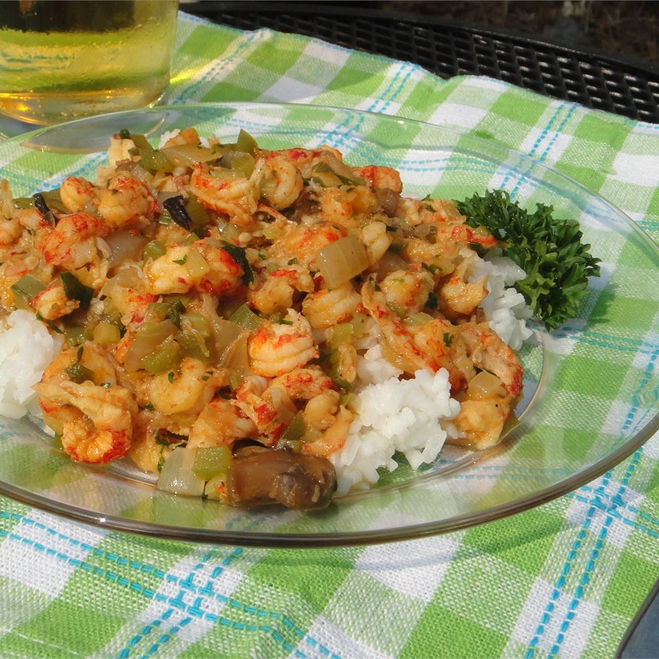

Go-To Crawfish Etoufee

Description
This soup seems an odd addition, but replaces the traditional roux -- and the end reslt is nothing short of wonderful. Serve over rice or linguin. The recipe contains the following macronutrients per serving : 236 calories; protein 18.8g; carbohydrates 9.2g; fat 13.9g; cholesterol 153.5mg; sodium 498.7mg
Ingredients
Steps
- Step 1 : Melt the butter in a large, heavy skillet over medium heat, and stir in the onion, green bell pepper, green onions, and celery; cook the vegetables, stirring frequently, until the onion is translucent and the vegetables have begun to soften, about 10 minutes. Stir in the golden mushroom soup, parsley, Cajun seasoning, salt, and black pepper, and bring the sauce to a boil.
- Step 2 : Gently mix in the crawfish tail meat, and simmer until the crawfish tails are opaque, 10 to 15 minutes.